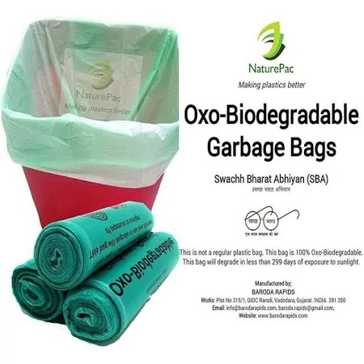
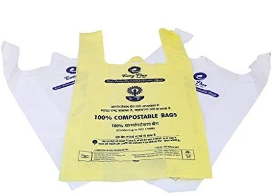
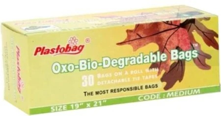
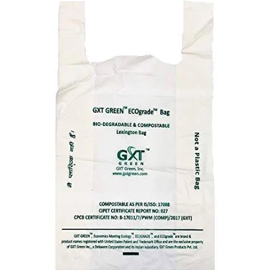
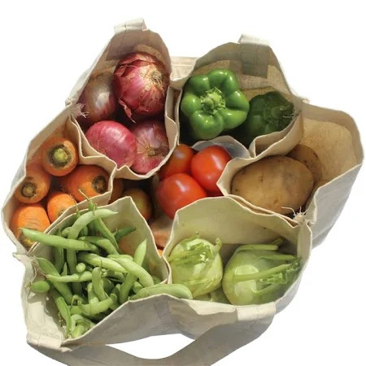
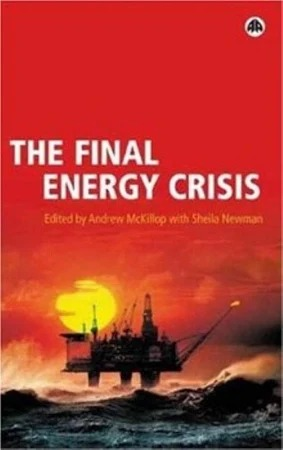
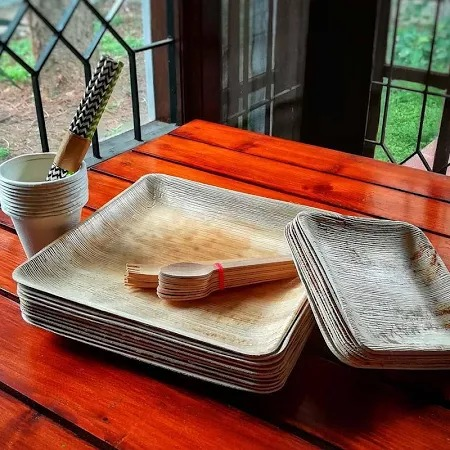
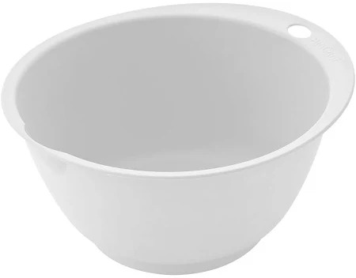
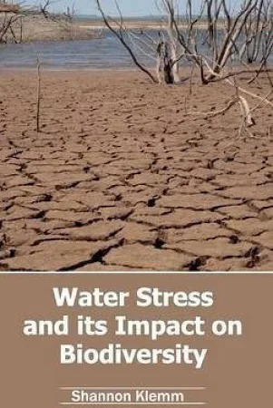

|  | Naturepac Garbage Bags Biodegradable Premium Green Large Size 60 Cm X 81 Cm / 24x32 Inches, (45 Bags) Rs. 330.00 from Snapdeal Certified Oxo Biodegradable Garbage suitable for Home and Office use-Buy on Snapdeal.com |
|  | Biodegradable & Compostable Carry bags by Easy-Flux Polymers (Milky White_EFCB07)(Size -13x16, Pack of 60 bags) Rs. 238.00 from Amazon India -Material:100% Compostable & Biodegradable |
|  | Plastobag Oxo - Biodegradable Medium Garbage Bag Rs. 64.00 from flipkart Brand Is Plastobag. Model Name Is Oxo - Biodegradable. Biodegradable Is Yes. Maximum Shelf Life Is 120 Months. Closure Is Twist-tie. Size Is Medium. |
|  | GXT Green Biodegradable & Compostable Lexington Corn Starch Multi Purpose Carry Bags with Size (13 X 16 Inches) Rs. 580.00 from amazon India Gxt Green Introducing 100% Biodegradeble And Compostable Grocery/ Shopping/ Carry Bags Made From Natural Feedstock Like Corn. These Bags Come In Bags For Daily Use |
|  | Eco Friendly Reusable Multi Pouch Grocery Bag
Rs. 369.00 from RefreshBag Jose Technologies is a renowned entity engaged in manufacturing and supplying a assortment of 100% biodegradable and compostable carry bags |
|  | The Final Energy Crisis Rs. 1082.00 on Flipkart The Final Energy Crisis Illustrates The Oil Shortages, Explains Why Kyoto Agreements Are Impossible, And How The Oil Wars Which Already Span The Globe, From Angola To Chechnya, Will Only Get Worse As The Need For Cheap Oil Will Dominate The World's Political Agenda. |
|  | Eco-friendly, Disposable 60-piece Areca Leaf Tableware Rs. 330 at Karnival Are you still celebrating with plastic? After every party, are you left with mountains of used plastic plates, cups and spoons that end up as trash? Then this 100% natural... |
|  | BioChef Bioplastic Mixing Bowl, White Rs. 3445.00 from Kiron Size:Small | Color:White The BioChef Bioplastic Mixing Bowl is made from a blend of 70-Percent corn starch with 30-Percent bioplastic, offering a low carbon material that is natural and healthy. The bowl is designed with an integrated pour spout and a grip area at the top so it won’t slip out of your hands. It's grease resistant, dishwasher safe and microwave safe. |
|  | Water Stress And Its Impact On Biodiversity Rs. 3331.00 on Flipkart This book discusses the topic of water stress and provides information regarding its impact on biodiversity. Ever since the Earth was formed, the amount of water present on our planet has remained consistent for about 4 billion years. |